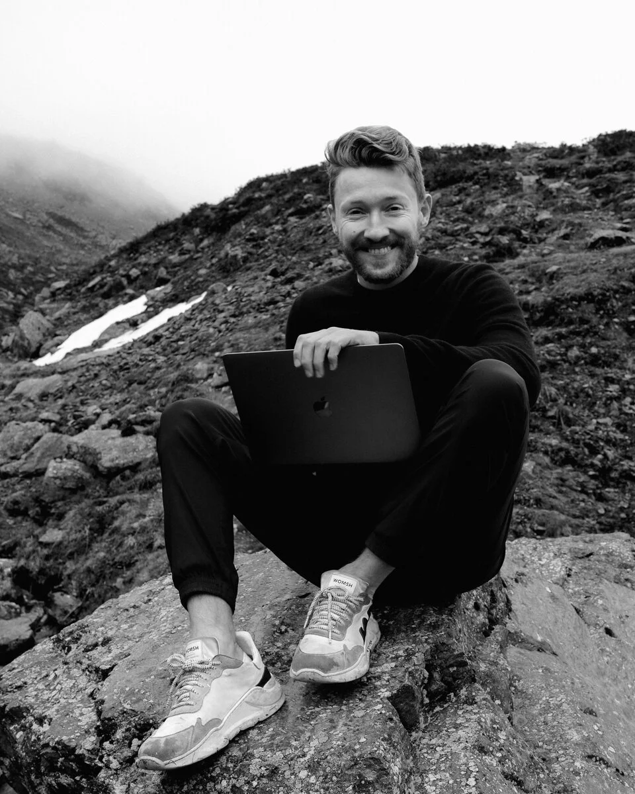

Ich bin Kevin Kuhn
Ich begleite Unternehmer und Neugierige mit Daten ungewöhnliche Wege zu gehen.

«The ability to take data — to be able to understand it, to process it, to extract value from it, to visualize it, to communicate it — that's going to be a hugely important skill in the next decades.»
– Dr. Hal R. Varian, Chief Economist at Google
ENGAGEMENT
2020 - Heute
Dozent, HWZ University of Applied Sciences in Business Administration Zurich, Zurich
www.fh-hwz.ch
EDUCATION
2021
Experimental Film with Machine Learning, Derrick Schultz
2021
Qiskit Global Summer School 2021, IBM
2020 - 2020
Artificial Intelligence for Trading, Udacity
2015 - 2016
Data Analyst, Udacity
2013 - 2015
MSc. in Online Business & Marketing, University of Applied Science and Art, Luzern
Photos von Vivian Perämäki